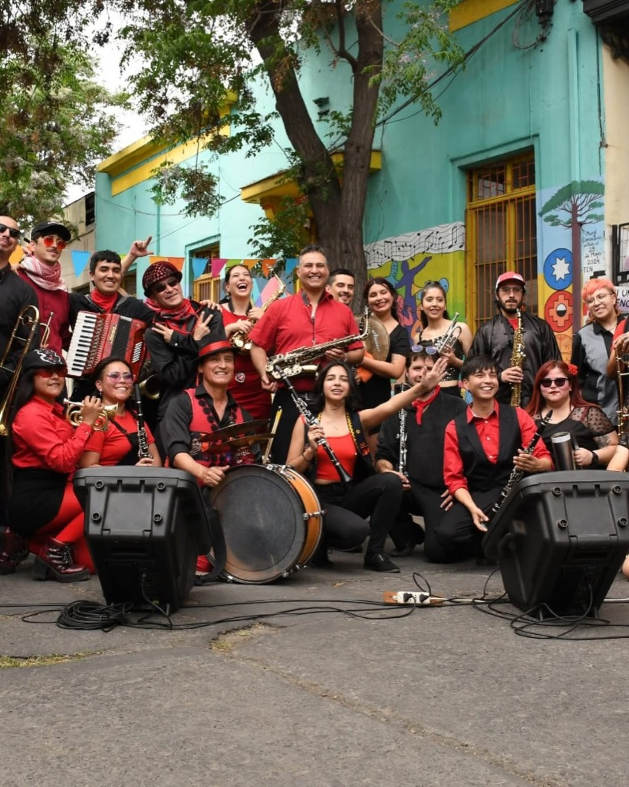
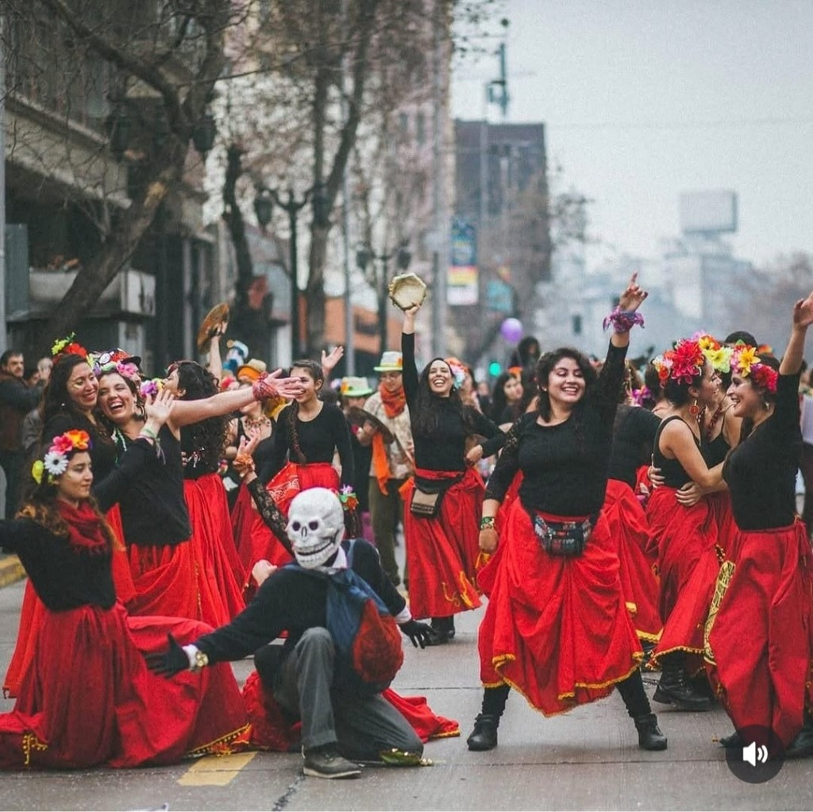
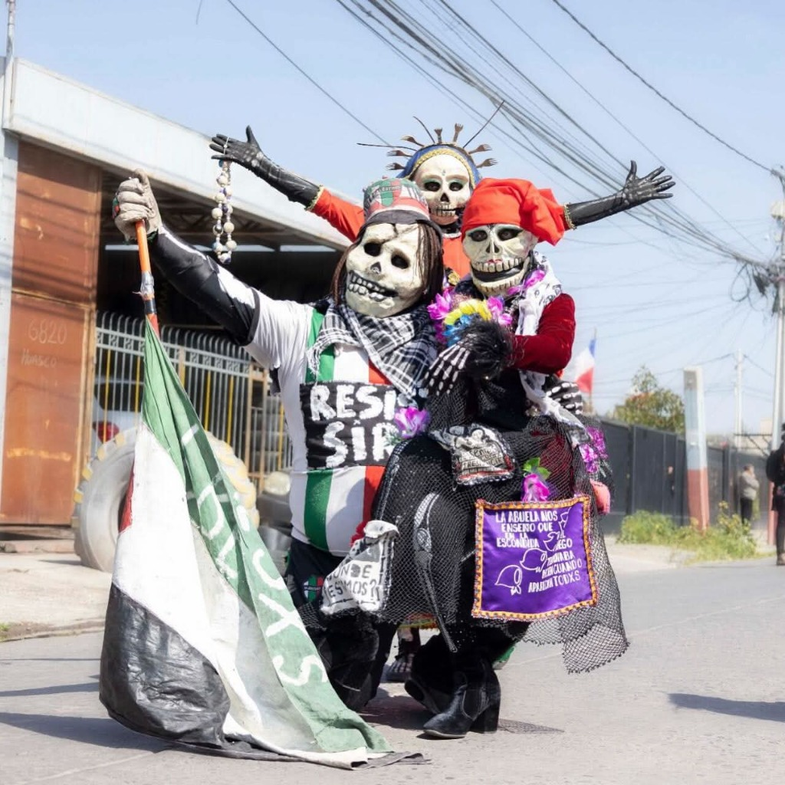

Cuerpo de Banda
El motor percusivo y melódico de nuestra identidad. Son la base rítmica implacable que marca el pulso de la calle y dirige la energía de cada intervención.
Conoce cómo nos organizamos para sostener el arte, la autogestión y la disciplina colectiva.
En la calle nacimos y en la calle vibramos. Sin embargo, lo que el público experimenta como una explosión visceral de energía y carnaval es, en realidad, el resultado de una maquinaria cultural perfectamente engranada. La Chinchin no es solo una agrupación; es un ecosistema vivo. A pesar de ser una red extensa y en constante rotación, operamos bajo una organización rigurosa que nos permite sostener nuestro arte a lo largo del tiempo. Somos el testimonio de que la autogestión, cuando se hace con disciplina, crea un modelo de trabajo capaz de inspirar y servir de referencia para cualquier colectivo artístico.
Así nos organizamos:

El frente de acción que da vida a nuestra identidad en el espacio público.

El motor percusivo y melódico de nuestra identidad. Son la base rítmica implacable que marca el pulso de la calle y dirige la energía de cada intervención.

La manifestación física de nuestro sonido. Transforman el ritmo en movimiento vibrante, conectando directamente con la emoción del público a través de una expresión cruda y callejera.

Los guardianes de la mística, la sátira y la memoria. A través de su estética y teatralidad, encarnan el alma histórica de La Chinchin, recordando de dónde venimos.
Para que el arte explote en la calle, el trabajo en la sombra debe ser impecable.
El motor de nuestra independencia. Diseñan las estrategias financieras y logísticas que aseguran la viabilidad y proyección del colectivo.
Los arqueólogos de nuestra cultura. Rescatan, analizan y documentan saberes mediante metodologías propias para que nuestra propuesta tenga raíz.
La academia de la calle. A través de sistemas de enseñanza exclusivos, forman a las nuevas generaciones asegurando que la técnica se herede.
Los arquitectos de nuestra identidad visual. Traducen nuestro sonido y nuestra furia en colores, formas y estéticas que impactan.
La voz del colectivo. Proyectan nuestra narrativa hacia el mundo, conectando a La Chinchin con la audiencia y los festivales.
El rigor operativo. Garantizan que cada presentación, viaje o interacción externa cumpla con los más altos estándares de profesionalismo.
El corazón de La Chinchin. Equipo de bienestar interno dedicado a cuidar nuestra gente, mejorar la convivencia y asegurar que seamos una familia sana.